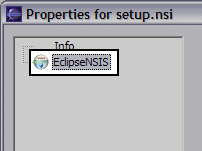

Properties
Introduction
The EclipseNSIS Properties page is invoked by selecting the Properties menu for a project, folder or an NSIS file in any view that shows a list of Workspace resources (e.g., resource navigator, JDT package explorer, etc.) and then selecting the EclipseNSIS item. The Properties menu is only available when a single resource is selected.

When a project, folder or NSIS script file (*.nsi) is selected, the Script Properties
page is opened, and if an NSIS header file (*.nsh) is selected, the Header Properties page is opened.
Previous | Contents | Next
Copyright © 2004-2010 Sunil Kamath (IcemanK).